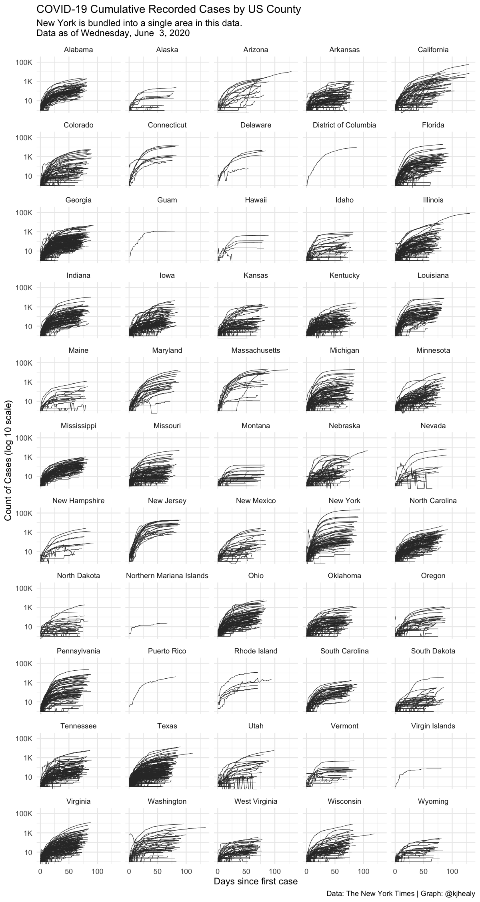

About the package
covdata is a data package for R that collects and bundles datasets related to the COVID-19 pandemic from a variety of sources. The data are current as of Monday, August 1, 2022. Minimal post-processing of the data has been done in comparison to the original sources, beyond conversion to tibbles and transformation into narrow- or tidy form. Occasionally some additional variables have been added (mostly ISO country codes) to facilitate comparison across the datasets or their integration with other sources.
covdata provides the following:
COVID-19 specific case and mortality data
- National-level case and mortality data from the European Centers for Disease Control.
- State-level case and mortality data for the United States from the COVID Tracking Project.
- State-level and county-level case and mortality data for the United States from the New York Times.
All-cause mortality and excess mortality data
- National-level short-term mortality fluctuations data from the Human Mortality Database.
- National-level all-cause and excess mortality estimates from the New York Times.
- U.S. state-level excess mortality estimates from the National Center for Health Statistics
Mobility and activity data
- Data from Apple on relative trends in mobility in cities and countries since mid-January of 2020, based on usage of their Maps application.
- Data from Google on relative trends in mobility was previously included with this package but is now available in covmobility.
Caveat Emptor
The data are provided as-is. More information about collection methods, scope, limits, and possible sources of error in the data can be found in the documentation provided by their respective sources. Follow the links above, and see the vignettes in the package. The collection and effective reporting of case and mortality data by national governments has technical and political aspects influenced by, amongst other things, the varying capacity of states to test, track and measure events in a timely fashion, the varying definitions, criteria, and methods employed by states in registering cases and deaths, and the role of politics in the exercise of capacity and the reporting of unflattering news. Researchers should take care to familiarize themselves with these issues prior to making strong claims based on these data.
Installation
There are two ways to install the covdata package.
Install direct from GitHub
You can install covdata from GitHub with:
remotes::install_github("kjhealy/covdata@main")Installation using drat
While using install_github() works just fine, it would be nicer to be able to just type install.packages("covdata") or update.packages("covdata") in the ordinary way. We can do this using Dirk Eddelbuettel’s drat package. Drat provides a convenient way to make R aware of package repositories other than CRAN.
First, install drat:
if (!require("drat")) {
install.packages("drat")
library("drat")
}Then use drat to tell R about the repository where covdata is hosted:
drat::addRepo("kjhealy")You can now install covdata in the usual way:
install.packages("covdata")To ensure that the covdata repository is always available, you can add the following line to your .Rprofile or .Rprofile.site file:
drat::addRepo("kjhealy")With that in place you’ll be able to do install.packages("covdata") or update.packages("covdata") and have everything work as you’d expect.
Note that my drat repository only contains data packages that are not on CRAN, so you will never be in danger of grabbing the wrong version of any other package.
Loading the Data
library(tidyverse) # Optional but strongly recommended
#> ── Attaching packages ─────────────────────────────────────── tidyverse 1.3.2 ──
#> ✔ ggplot2 3.3.6 ✔ purrr 0.3.4
#> ✔ tibble 3.1.8 ✔ dplyr 1.0.9
#> ✔ tidyr 1.2.0 ✔ stringr 1.4.0
#> ✔ readr 2.1.2 ✔ forcats 0.5.1
#> ── Conflicts ────────────────────────────────────────── tidyverse_conflicts() ──
#> ✖ dplyr::filter() masks stats::filter()
#> ✖ dplyr::lag() masks stats::lag()
library(covdata)
#>
#> Attaching package: 'covdata'
#>
#> The following object is masked from 'package:datasets':
#>
#> uspop
covnat_weekly
#> # A tibble: 4,020 × 11
#> date year_week cname iso3 pop cases deaths cu_ca…¹ cu_de…² r14_c…³
#> <date> <chr> <chr> <chr> <dbl> <dbl> <dbl> <dbl> <dbl> <dbl>
#> 1 2019-12-30 2020-01 Austr… AUT 8.93e6 0 0 0 0 NA
#> 2 2020-01-06 2020-02 Austr… AUT 8.93e6 0 0 0 0 0
#> 3 2020-01-13 2020-03 Austr… AUT 8.93e6 0 0 0 0 0
#> 4 2020-01-20 2020-04 Austr… AUT 8.93e6 0 0 0 0 0
#> 5 2020-01-27 2020-05 Austr… AUT 8.93e6 0 0 0 0 0
#> 6 2020-02-03 2020-06 Austr… AUT 8.93e6 0 0 0 0 0
#> 7 2020-02-10 2020-07 Austr… AUT 8.93e6 0 0 0 0 0
#> 8 2020-02-17 2020-08 Austr… AUT 8.93e6 0 0 0 0 0
#> 9 2020-02-24 2020-09 Austr… AUT 8.93e6 12 0 12 0 0.134
#> 10 2020-03-02 2020-10 Austr… AUT 8.93e6 114 0 126 0 1.41
#> # … with 4,010 more rows, 1 more variable: r14_deaths <dbl>, and abbreviated
#> # variable names ¹cu_cases, ²cu_deaths, ³r14_cases
#> # ℹ Use `print(n = ...)` to see more rows, and `colnames()` to see all variable names
apple_mobility %>%
filter(subregion_and_city == "New York City", transportation_type == "walking")
#> # A tibble: 817 × 7
#> country sub_region subregion_and_city geo_type date trans…¹ score
#> <chr> <chr> <chr> <chr> <date> <chr> <dbl>
#> 1 United States New York New York City city 2020-01-13 walking 100
#> 2 United States New York New York City city 2020-01-14 walking 96.1
#> 3 United States New York New York City city 2020-01-15 walking 106.
#> 4 United States New York New York City city 2020-01-16 walking 102.
#> 5 United States New York New York City city 2020-01-17 walking 117.
#> 6 United States New York New York City city 2020-01-18 walking 115.
#> 7 United States New York New York City city 2020-01-19 walking 110.
#> 8 United States New York New York City city 2020-01-20 walking 88.6
#> 9 United States New York New York City city 2020-01-21 walking 91.1
#> 10 United States New York New York City city 2020-01-22 walking 98.5
#> # … with 807 more rows, and abbreviated variable name ¹transportation_type
#> # ℹ Use `print(n = ...)` to see more rows
covus %>%
filter(measure == "positive",
date == "2020-04-27",
state == "NJ")
#> # A tibble: 1 × 7
#> date state fips data_quality_grade measure count measure_label
#> <date> <chr> <chr> <lgl> <chr> <dbl> <chr>
#> 1 2020-04-27 NJ 34 NA positive 111188 Positive Tests
nytcovcounty %>%
mutate(uniq_name = paste(county, state)) %>% # Can't use FIPS because of how the NYT bundled cities
group_by(uniq_name) %>%
mutate(days_elapsed = date - min(date)) %>%
ggplot(aes(x = days_elapsed, y = cases, group = uniq_name)) +
geom_line(size = 0.25, color = "gray20") +
scale_y_log10(labels = scales::label_number_si()) +
guides(color = FALSE) +
facet_wrap(~ state, ncol = 5) +
labs(title = "COVID-19 Cumulative Recorded Cases by US County",
subtitle = paste("New York is bundled into a single area in this data.\nData as of", format(max(nytcovcounty$date), "%A, %B %e, %Y")),
x = "Days since first case", y = "Count of Cases (log 10 scale)",
caption = "Data: The New York Times | Graph: @kjhealy") +
theme_minimal()
#> Warning: `label_number_si()` was deprecated in scales 1.2.0.
#> Please use the `scale_cut` argument of `label_number()` instead.
#> This warning is displayed once every 8 hours.
#> Call `lifecycle::last_lifecycle_warnings()` to see where this warning was generated.
#> Warning: `guides(<scale> = FALSE)` is deprecated. Please use `guides(<scale> =
#> "none")` instead.
#> Don't know how to automatically pick scale for object of type difftime. Defaulting to continuous.
#> Warning: Transformation introduced infinite values in continuous y-axis
Documentation and Summary Codebook
To learn more about the different datasets available, consult the vignettes or, equivalently, the package website. For a codebook-like summary of the variables in each table, see the Codebook vignette
Citing the covdata package
To cite the package use the following:
citation("covdata")
#>
#> To cite the package `covdata` in publications use:
#>
#> Kieran Healy. 2020. covdata: COVID-19 Case and Mortality Time Series.
#> R package version 0.5.2, <http://kjhealy.github.io/covdata>.
#>
#> A BibTeX entry for LaTeX users is
#>
#> @Manual{,
#> title = {covdata: COVID-19 Case and Mortality Time Series},
#> author = {Kieran Healy},
#> year = {2020},
#> note = {R package version 0.5.2},
#> url = {http://kjhealy.github.io/covdata},
#> }Please be sure to also cite the specific data sources, as described in the documentation for each dataset.
Mask icon in hex logo by Freepik.